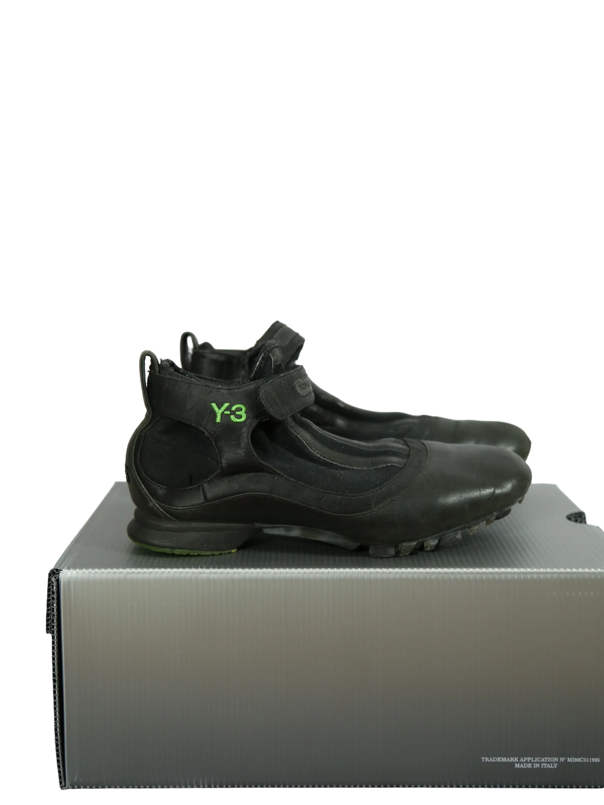

Y-3
90.00 €
Aus dem kuratierten Archiv von Disorder119. Diese Y-3 Sneakers verbinden sportliche Funktionalität mit der reduzierten Formsprache von Yohji Yamamoto. Das Modell zeigt sich in tiefem Schwarz mit markantem Klettverschluss, klarer Linienführung und einer technisch wirkenden Silhouette. Die grün akzentuierte Laufsohle setzt einen ruhigen Kontrast und verleiht dem Schuh eine progressive Note. Durch die leichte, flexible Form eignet sich der Sneaker besonders gut für den Sommer: offen wirkend, unkompliziert tragbar und ideal zu weiten Hosen, Shorts, Röcken oder minimalistischen Layering-Looks. Das Leder zeigt eine natürliche Patina, die dem Schuh Charakter gibt, ohne seine klare Gestaltung zu überlagern. Ein funktionaler Designer-Sneaker zwischen Avantgarde, Alltag und sportlicher Leichtigkeit. Details: Marke: Y-3 Farbe: Schwarz mit grüner Sohle Größe: EU 36 Passform: Regulär Verschluss: K
Im Archiv ansehen & in den Warenkorb →